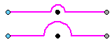
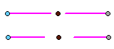

Connector Properties dialog box
Changes made in this dialog box set defaults for new connectors added to the current drawing. They override global connector annotation property settings in the Solid Edge Options dialog box and in the Dimension Style dialog box, where options on the General tab, the Annotation tab, and the Terminator and Symbol tab set defaults for the Connector annotation style.
- Color
-
Sets the color of connector line segments.
Note:You can change the connector line segment color but not the handle color in the Connector Properties dialog box. You can change the start and end handle colors on the Colors tab in the Solid Edge Options dialog box. To learn about the options that control connector handle color, see Connector style and properties.
- Jump radius/gap
-
Sets the size of the Jump connector arc radius, or of the Gap connector spread, as a multiple of the text height.
Example:Connector type
Jump radius/gap
Result
Jump
Top=1
Bottom=2

Gap
Top=1
Bottom=2

You can set a default value in the Connector Properties dialog box, and then interactively change the value as you add connectors using the Jump radius/gap option on the Connector command bar. If you change the value for a connector you are editing, press Tab to update the display.
- Line width
-
Sets the width of connector line segments.
- Line type
-
Sets the type of connector line segments.
- Text scale
-
Overrides the text scale factor used in annotation text.
- Start/End Type and Length
-
The options in this section specify different terminator shapes and shape lengths for the start of a connector and the end of a connector. The first Type and Length controls set the options for the start of the connector, and the second Type and Length controls set the options for the end of the connector.
- Length
-
Sets the terminator shape size. The value is multiplied by font size.